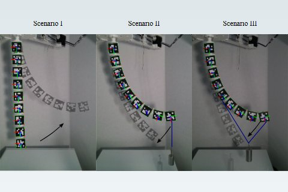

Stochastic Adaptive Estimation in Polynomial Curvature Shape State Space for Continuum Robots
IEEE Transactions on Robotics, 2026
Published
Presented by co-author Dr. Long Wang at IROS 2026, Pittsburgh, PA (Sep 28, 2026).